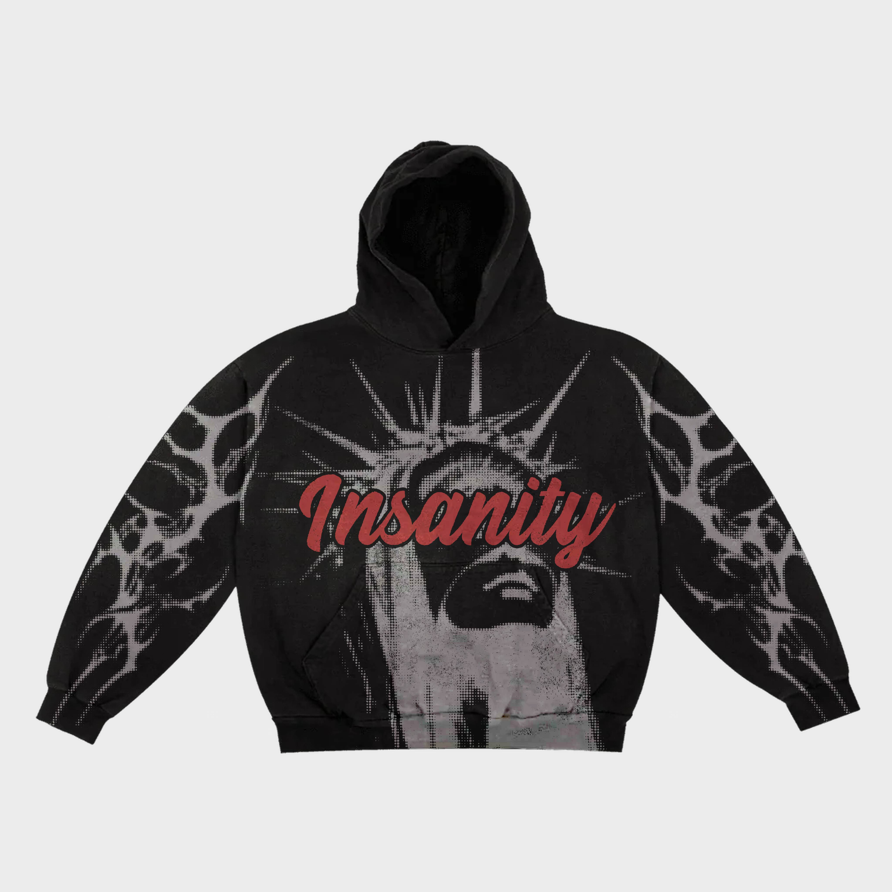
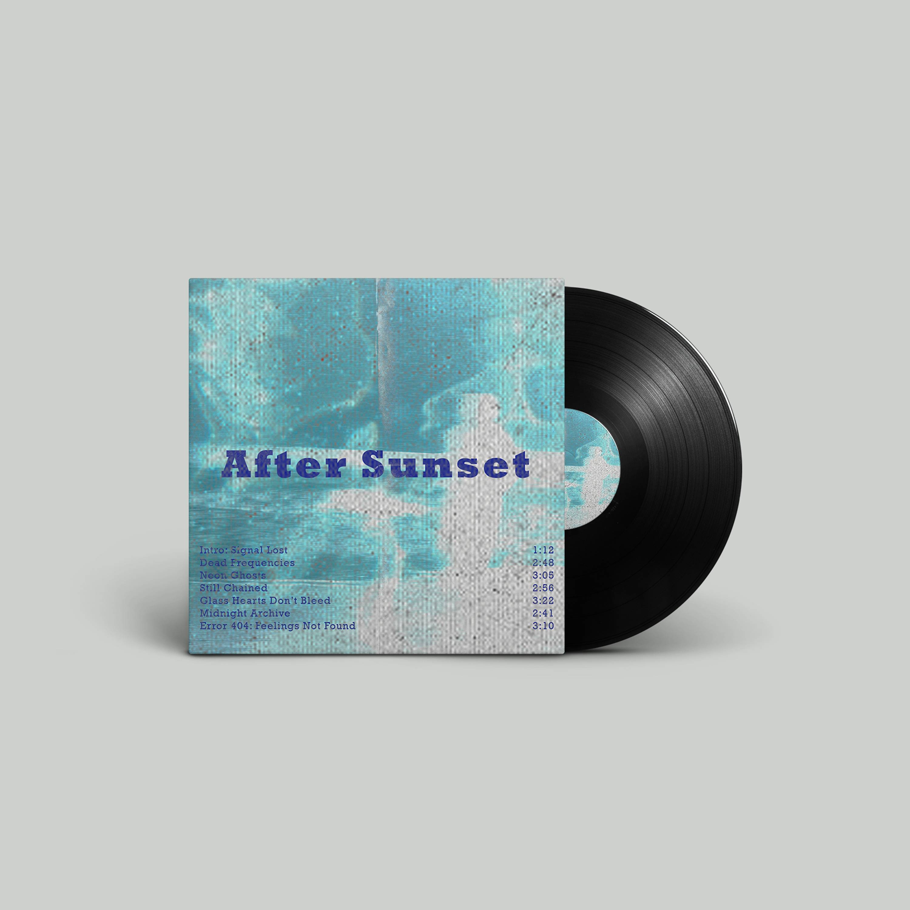
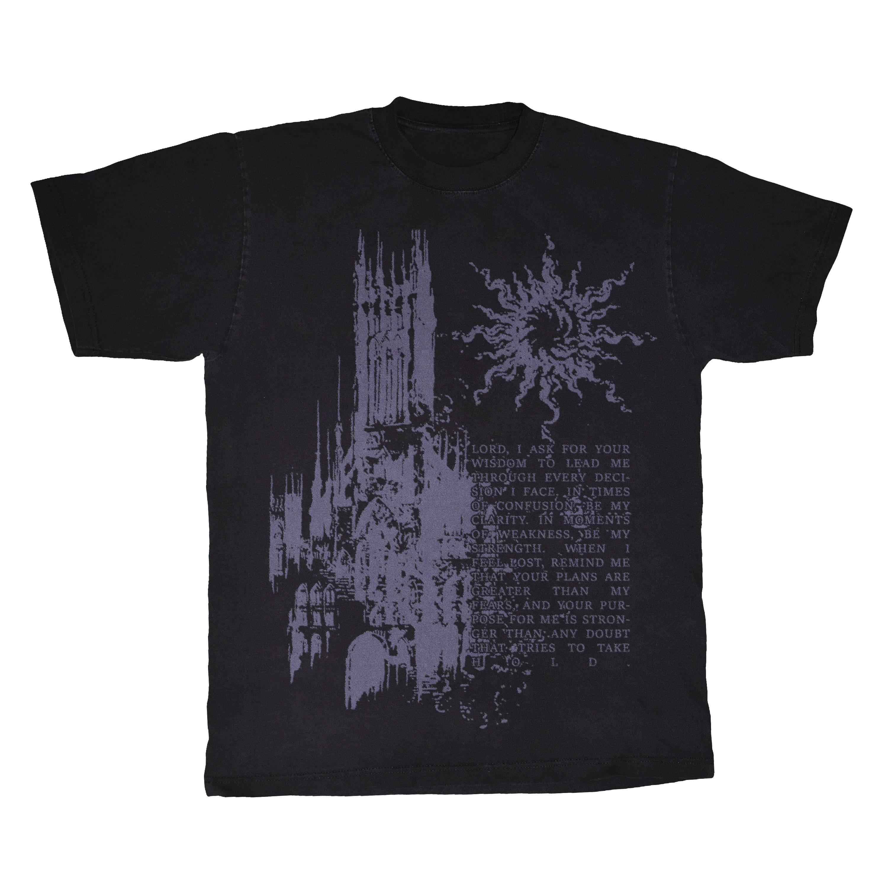
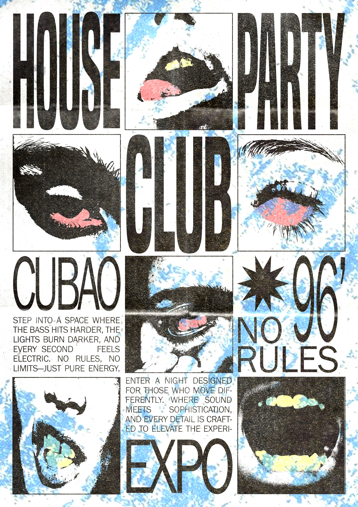
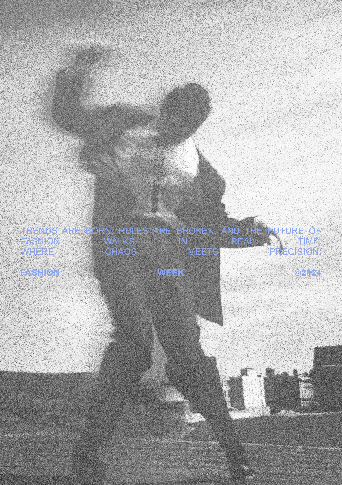
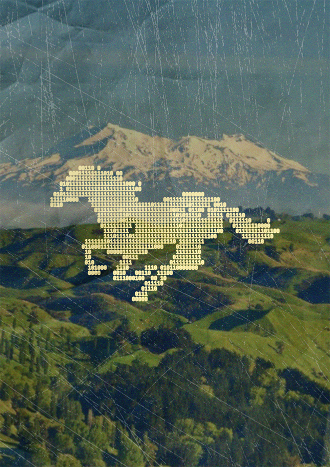
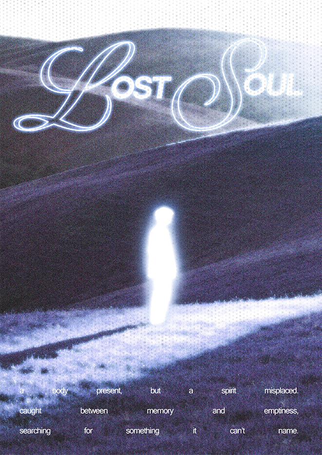
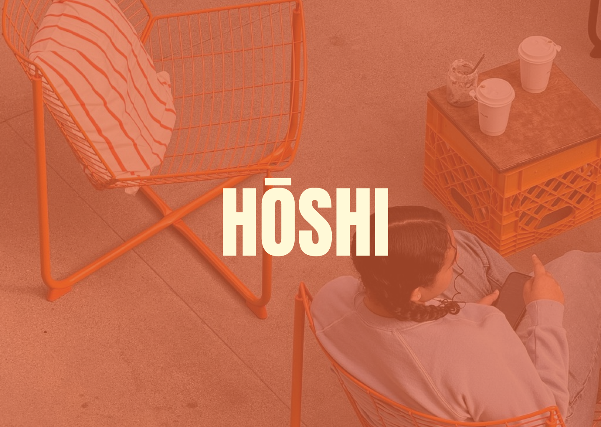
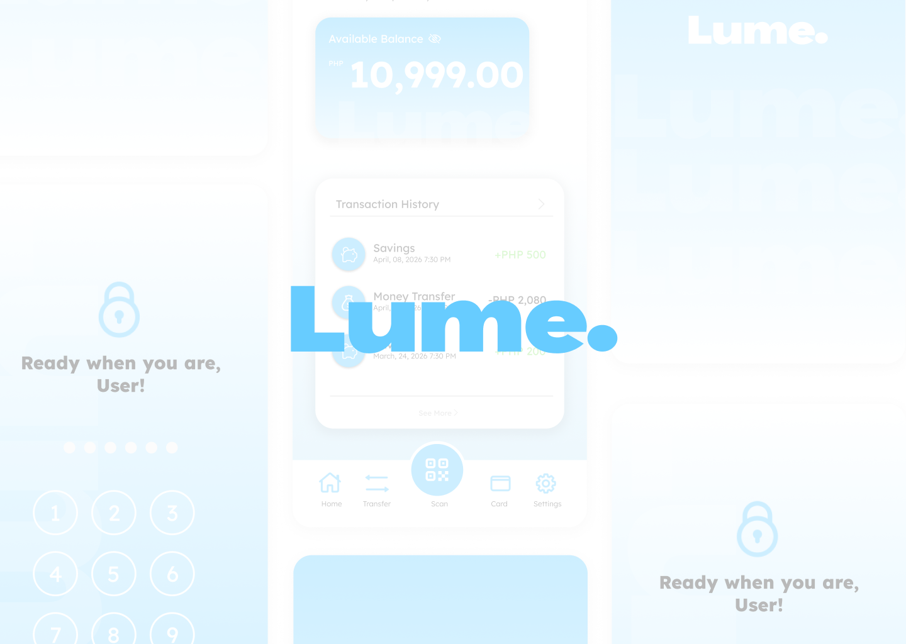
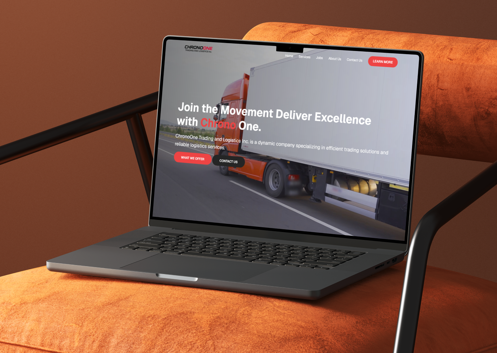

— Visual Concept
Archive
Explorations, experiments, and visual studies that don't fit neatly into a project box.








YUAN CREATIVE © STUDIO
Graphic Designer & Creative Director
Brand identities, digital experiences,
and visual systems that resonate.
A curated selection of brand identities, digital experiences, and visual systems crafted with intention.



From identity systems to digital interfaces — I help brands look and feel exactly how they should.
Logo systems, color palettes, typography, and the full visual language that makes a brand unmistakable across every touchpoint.
Interfaces that are intuitive and beautiful. From wireframes to high-fidelity prototypes, I design digital experiences users actually enjoy.
Translating designs into clean, responsive, animated code. Websites built with HTML, CSS, and JavaScript that perform as good as they look.
Every project follows an intentional path — from discovery to delivery, with clarity at every step.
I start by listening. Understanding your brand, audience, goals, and competitors. A thorough brief shapes everything that follows — no guesswork, just clarity.
Ideas sketched, moodboards built, directions explored. I develop 2–3 strong creative routes and refine the one that fits best before committing to production.
The concept becomes real. Every pixel intentional, every choice deliberate. I work through layout, type, color, and composition until it's exactly right.
I present work clearly and welcome your input. Revisions are collaborative — we iterate until the solution is exactly what it should be.
Files packaged and delivered in every format you need. Brand guides, source files, print specs — everything organized so you can hit the ground running.
The software I use daily to bring concepts to life — from initial sketches to final production.
Explorations, experiments, and visual studies that don't fit neatly into a project box.







Hello👋, I'm Yuan Cedrick Ramos from Philippines a graphic designer who blends creativity with strategy to design work that not only looks good but communicates, connects, and leaves a lasting impression.
Creative Graphic Designer crafting bold, modern visuals that communicate and inspire.